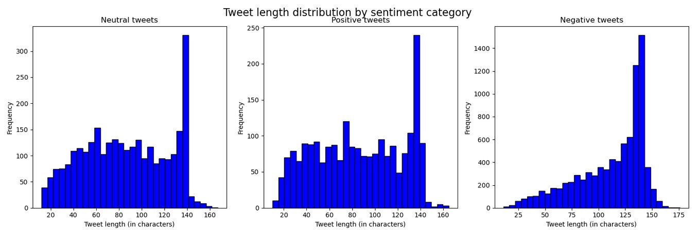

Hello, welcome to my portfolio!
 FLIGHT EXPERIENCE FEEDBACK ANALYZER
More Info
FLIGHT EXPERIENCE FEEDBACK ANALYZER
More Info
Table of Contents:
- 1. üìå Introduction
- Monitor customer satisfaction in real-time.
- Identify areas for service improvement.
- Make data-driven decisions.
- 2. üìä Dataset
- text: The tweet text published by the user about their flight experience with a specific airline.
- airline_sentiment: The target variable, which classifies the sentiment of the experience into positive, negative, or neutral.
- 3. üß™ Model Development
- 4. üìä EDA (Exploratory Data Analysis)
- Number of words per tweet
- Number of unique words per tweet
- Average word length per tweet
- Total number of characters per tweet
- Class balance across sentiment categories
-
Tweet Length (in words):
Negative tweets tend to be longer on average, peaking around 22–25 words. In contrast, positive and neutral tweets are generally shorter and more dispersed. This suggests that users are more verbose when expressing dissatisfaction.

-
Number of Unique Words:
Negative tweets also exhibit a higher number of unique words per tweet, indicating a richer vocabulary likely used to detail complaints. Positive and neutral tweets show a more modest and uniform distribution of unique terms.
-
Average Word Length:
Across all sentiment categories, the average word length remains fairly stable, typically between 4 and 6 characters. This implies that while users may write more when unhappy, the complexity of the vocabulary used does not vary significantly with sentiment.
-
Tweet Length (in characters):
Similar to word count, tweets labeled as negative often reach the character limit (140–160 characters), whereas positive and neutral tweets are generally shorter. This reinforces the idea that users elaborate more when describing negative experiences.
 Conclusion:
These insights confirm that tweet length and lexical diversity are strong indicators of sentiment polarity. Negative feedback is usually more detailed, which can be leveraged in model training by including features related to text length or richness. This justifies exploring more advanced models capable of capturing nuanced language patterns beyond simple keyword-based approaches. -
Class Balance Across Sentiment Categories:
The dataset shows a clear imbalance across sentiment categories. The negative class dominates with over 8,600 tweets, while the neutral and positive classes have approximately 2,900 and 2,100 samples, respectively. - Undersampling the majority class (negative) could lead to information loss, which is especially harmful when using deep models like BERT that benefit from large and diverse datasets.
- Oversampling the minority classes may introduce overfitting, particularly if the same samples are repeated multiple times during training.
- 6. üßπ Data Cleaning
- üîó Removing URLs: Links were stripped from the text since they provide no useful sentiment information and can distort vector representations.
- üßë‚Äçüíª Replacing user mentions: Mentions (e.g.,
@username) were replaced with a generic placeholder to preserve structure without introducing noise. - üòÄ Removing emojis: Emojis were removed to simplify the text and maintain consistency across samples.
- üôÇ Eliminating emoticons: Classic emoticons like
:)or:(were also removed, as they may not be interpreted reliably by standard tokenizers. - #️⃣ Removing the '#' from hashtags: Hashtag symbols were deleted while preserving the associated words (e.g.,
#delayed→delayed) to retain semantic meaning. - ␣ Normalizing whitespace: Extra spaces were removed to avoid tokenization issues.
- 7. üîÑ Variable Transformation
- Naive Bayes
- Simple feedforward neural networks
- Recurrent neural networks (RNNs)
-
üìà TF-IDF (Term Frequency ‚Äì Inverse Document Frequency):
Used as input for both Naive Bayes and deep feedforward neural networks. This method converts text into sparse numeric vectors by capturing the importance of each word in a document relative to the entire corpus. -
üî§ Word Embeddings with Word2Vec:
Applied in the case of recurrent neural networks (RNNs), where each word was transformed into a dense, fixed-size vector. These embeddings capture semantic relationships between words and were either pretrained or trained on the dataset itself.
- input_ids: the encoded representation of each token (word/subword) in the input text.
- attention_mask a binary mask that indicates which tokens should be attended to (1) and which are padding (0). This helps BERT ignore padded tokens during computation.
- 0 → positive
- 1 → neutral
- 2 → negative
- 8. ü߆ Model Training with BERT
- The model was trained on the training set.
- It was evaluated on the validation set after each epoch.
- Finally, it was tested on unseen data to assess its real-world performance.
- Optimizer: AdamW, a variant of the Adam optimizer tailored for Transformers, with a learning rate of 3e-5.
- Loss Function: CrossEntropyLoss, well-suited for multi-class classification.
-
Evaluation Metrics:
- Weighted Precision
- Weighted Recall
- After every epoch (and intermittently during training), the model’s performance on the validation set was evaluated.
- If the validation precision improved, the current model state was saved using:
- 9. üìà Final Results
- Strong generalization performance
- No signs of overfitting
- ~10 percentage point improvement over other models (Naive Bayes, feedforward and recurrent neural networks)
- Positive (0): The model achieves 0.84 precision and 0.76 recall, resulting in an F1-score of 0.80. This means it correctly identifies many positive tweets, though some are misclassified as neutral or negative. Still, when it predicts "positive", it is usually right.
- Neutral (1): This is the most challenging class for the model, with the lowest F1-score (0.69), precision (0.71), and recall (0.68). This likely stems from the ambiguous nature of neutral language, which often overlaps with both positive and negative expressions.
- Negative (2): This is where the model performs best. With a 0.90 F1-score and 0.92 recall, it captures nearly all negative tweets, and with very high precision (0.89). This strong performance is expected due to the abundance and clarity of negative expressions in the dataset.
- 10. üöÄ Production Deployment
- /register: Allows users to create an account
- /login: Authenticates users and returns an access token
- /predict: Receives a text input and returns a sentiment prediction along with a personalized, empathetic message
-
positive:
"We're happy to hear your experience was good! We hope to have you flying with us again soon."
-
neutral:
"Thank you for your feedback! We are constantly working to improve our service."
-
negative:
"We're truly sorry for your experience. We will get in touch with you to improve anything that needs attention."
- Registered user information
- Encrypted passwords
- JWT tokens are used for authentication after login
- Only authenticated users can access the /predict endpoint
- Passwords are never stored in plain text
- 11. ☁️ Cloud Deployment
- Writing a Dockerfile that installs all dependencies and launches the FastAPI app
- Copying the trained model directly into the Docker image so that predictions can be made without needing to reload the model externally
- Avoiding sensitive or unnecessary files using a .dockerignore file
- Lightweight image based on python:3.10-slim
- Installation of dependencies via requirements.txt
- Inclusion of model files and backend code
- Command to launch FastAPI with Uvicorn
- Creating an ECR repository and pushing the image containing the backend code
- Setting up an App Runner service connected to that repository
- Configuring the necessary environment variables (such as database URL, secret key, and JWT algorithm)
- Verifying that the backend was available over HTTPS with basic auto-scaling enabled
- 12. üåê Frontend Deployment with Vercel
-
Token-based authentication: The JWT token obtained during login is stored in
localStorageand included in theAuthorizationheader when making requests to/predecir. -
The following endpoints are consumed from the backend hosted on App Runner:
/login/registro/predecir
- 13. üí° Future Work
-
Improve performance on the "neutral" class
The model shows lower precision and recall for neutral tweets. Future work could explore techniques such as:- Data augmentation for underrepresented classes
- Incorporating sentiment lexicons or external context
-
Add user feedback collection
Allow users to rate the accuracy of the prediction and use that feedback to improve model retraining. -
Integrate CI/CD pipeline
Automate testing and deployment for both backend and frontend using tools like GitHub Actions. -
Add password recovery and email confirmation
Improve the authentication flow by adding options for password reset and verifying user emails via Supabase or a third-party service. -
Multilingual support
Extend the model to classify sentiment in other languages, such as Spanish or French, using multilingual models likebert-base-multilingual-cased. -
Analytics dashboard for admins
Create a dashboard where admins (e.g., airline staff) can see aggregated sentiment trends and filter feedback by time, sentiment, or keywords.
This project aims to build an intelligent system capable of predicting the sentiment of user comments about flight experiences. For this purpose, a dataset from Kaggle was used, containing real tweets from passengers about flights with different airlines.
The ultimate goal is to develop a production-ready web application where users can share their opinions about their flights, and the system, using natural language processing (NLP) models, automatically classifies the comments as positive, negative, or neutral.
This way, airlines can use the collected information to:
The dataset was extracted from Kaggle and can be found at the following link:
Sentiment Analysis of Airline Tweets and Comments
It is a CSV file containing 15 columns and 14,640 rows of tweets from users sharing their flight experiences.
The key variables used in this project are:
These two variables are the core of the sentiment analysis modeling.
In this stage, I focused on obtaining the best possible model to deploy in a production environment. To achieve this, I conducted an exploratory data analysis that helped me understand the behavior of the text and evaluate whether it was feasible to use more traditional probabilistic models, such as Naive Bayes.
I also performed thorough text preprocessing, selected appropriate evaluation metrics, and tested various models, comparing their performance using fine-tuning techniques. This process allowed me to select the most robust model in terms of accuracy and generalization.
In this section, I performed an exploratory analysis of the text variable in relation to the airline_sentiment label.
The goal was to identify statistical patterns that help understand how the textual data is structured depending on the sentiment (positive, neutral, or negative).
Some of the key analyses included:
This EDA step was essential to assess the feasibility of simpler models and guided decisions in text cleaning, tokenization, and feature selection.
‚öôÔ∏è ü߆ Insights from Exploratory Analysis
From the exploratory analysis of the text data, several key insights emerge:
While this imbalance might suggest the need for resampling techniques such as oversampling or undersampling, it's important to consider the implications:
At this stage, the text variable — containing the user tweets — was preprocessed to remove noise that could negatively affect model performance. Tweets often include a variety of elements that do not contribute to sentiment analysis and can mislead or clutter the learning process.
The following cleaning operations were applied:
These preprocessing steps were crucial to creating a clean and standardized corpus, which improves the quality of tokenization and vectorization, and ultimately enhances the model’s accuracy and robustness.
Before detailing the specific transformations applied, it's important to note that multiple models were tested prior to selecting the final one. These included:
Each of these models required input features in different formats, so the text data needed to be transformed accordingly.
Finally, the model selected for deployment was based on Transformers, specifically using BERT with fine-tuning of the last layers (this process will be explained in more detail in a later section).
To feed the text data into BERT, the input was tokenized into tensors using a pre-trained BERT tokenizer. This process generated two key components:
On the other hand, the target variable (airline_sentiment), originally a column containing the string labels "positive", "neutral", and "negative", was converted into a numeric tensor with values:
This transformation allowed the model to perform multi-class classification efficiently using a categorical loss function like CrossEntropyLoss.
To properly assess model performance and select the best architecture, the dataset was first split into training, validation, and test sets:
The final model used was:
from transformers import BertForSequenceClassification
model = BertForSequenceClassification.from_pretrained('bert-base-uncased', num_labels=3)
⚙️ Optimization and Metrics
To train and evaluate the model effectively, the following configuration was used:
These metrics were calculated using torchmetrics, taking class imbalance into account for both training and validation phases.
üèÜ Best Model Selection Strategy
To ensure optimal model performance, a validation-based checkpointing approach was used:
torch.save(best_model_state, "mejor_modelo_por_precision.pt")
This approach ensured that the best model — in terms of correctly classifying sentiments — was retained and later deployed.
For training, a GPU provided by Google Colab was used, which significantly accelerated the fine-tuning of the BERT model.
The final model achieved an F1-score (weighted average) of 0.84 on both the validation and test sets, indicating:
This performance gain is likely due to BERT's capacity to capture contextual information across entire sentences, allowing it to better understand sentiment nuances.
Below are the classification metrics obtained on the test set:
üîç Class-wise Analysis
To deploy the sentiment classification system, a production-ready architecture was implemented, allowing users to access the application through login or registration.
üîß Backend with FastAPI
The backend was developed using FastAPI and exposes the following main POST endpoints:
Example responses based on sentiment:
This approach simulates a real-world customer service response tailored to the detected sentiment.
All endpoints are automatically documented through FastAPI's interactive interface at /docs, making them easy to test and integrate.
üõ†Ô∏è Authentication and Database
To manage user accounts, a SQL (PostgreSQL) database was created using Supabase, where the following data is stored:
The backend handles communication with the database to authenticate users. The frontend never directly accesses sensitive data, ensuring greater security.
üîê Security and Encryption
Password protection is implemented using bcrypt encryption, following industry best practices. Additionally:
pwd_context = CryptContext(schemes=["bcrypt"], deprecated="auto")
oauth2_scheme = OAuth2PasswordBearer(tokenUrl="/login")
To make the application available online and production-ready, a cloud-based deployment pipeline was implemented using Docker, AWS ECR, and AWS App Runner.
üê≥ Docker Containerization
The backend application was containerized using Docker to ensure portability and consistency across environments. This process included:
üî• Dockerfile Highlights
The Dockerfile ensured:
üìÅ .dockerignore
To keep the image clean and secure, a .dockerignore file was created with the following contents:
pycache/
*.pyc
*.pyo
.env
.git
.vscode
venv/
env/
*.log
*.sqlite3
*.db
data/
This prevents unnecessary files (such as local caches, logs, databases, and development environment folders) from being copied into the Docker image.
Once the Docker image was built and tested locally, it was pushed to AWS ECR (Elastic Container Registry). From there, the backend was deployed using AWS App Runner.
üöÄ Deployment with AWS ECR & App Runner
App Runner allows applications to be deployed directly from Docker images (hosted in ECR) without the need to manage any servers or infrastructure manually.
The deployment process involved:
This approach made it easy to deploy the backend to the cloud, making it publicly accessible and ready to connect with the frontend.
The frontend of the application was developed using React and deployed via Vercel, a platform that offers instant hosting for frontend applications with continuous integration.
üß± Frontend Stack and Structure
The frontend communicates with the backend via fetch requests using the POST method. Key aspects include:
The frontend properly handles authentication errors and model responses, displaying informative messages to the user.
üöÄ Deployment on Vercel
The React app was deployed on Vercel, which automatically detects changes pushed to GitHub and performs the build and deployment process seamlessly.
Although the application is functional and production-ready, there are several areas that could be improved or expanded in future iterations:
 BANK LOAN RISK SCORE ANALYZER
More Info
BANK LOAN RISK SCORE ANALYZER
More Info
Table of Contents:
- 1. Introduction
- 2. Objectives
- 3. Understanding the Problem
- 4. Project design
- Probability of Default (PD): This represents an internal credit rating assigned to each client, which helps estimate the likelihood of the client defaulting on their obligations.
- Loss Given Default (LGD): A critical metric in risk analysis, it indicates the percentage of exposure that is not expected to be recovered in the event of a default.
- Exposure at Default (EAD): This refers to the percentage of the outstanding debt at the time of default.
- 5. Data quality
- Correction of names
- Elimination of variables with unique values
- Removal of duplicates
- Imputation of null values
- Correction of outliers
- 6. Exploratory data analysis
- Question 1: What are the most common professions of the clients requesting loans?
- Question 2: How does the score assigned by the bank to the client affect the debt status?
- Question 3: How does the usage percentage, relative to the credit granted on a card, affect the debt status?
- Question 4: Does the repayment term of the debt affect the client's default rate?
- Question 5: Does the loan purpose affect the client's default rate?
- 7. Feature transformation
- 8. Modelling
- For customers who will actually have very limited exposures at default, the model predicts that they will have some degree of exposure to default, which will lead to somewhat higher fees/interest being charged than they would be entitled to.
- For customers with high actual default exposures: the model will tend to predict lower than actual default exposures, so that lower fees/interest will be applied than would be the case.
- 9. Web app
The client is an online platform specializing in offering various types of loans to urban customers. This platform enables borrowers to easily and quickly access loans with competitive interest rates through a user-friendly interface.
When a loan application is received, the company evaluates the applicant's profile to decide whether to approve the loan. Similar to other lending companies, loans granted to "high-risk" customers are the primary source of financial losses. Therefore, the company aims to identify these high-risk borrowers and the potential losses associated with their loans to improve capital management, optimize its loan portfolio, and enhance its risk assessment process.
Development of an advanced analytical tool that uses predictive machine learning models to estimate the expected financial loss of each new client-loan relationship.
Credit risk refers to the possibility that a client will fail to meet their contractual obligations, such as mortgages, credit card debts, and other types of loans.
Minimizing the risk of default is one of the primary concerns of financial institutions. For this reason, commercial banks, investment banks, venture capital funds, asset management companies, and insurance companies are increasingly relying on technology to predict which clients are more likely to default on their debts.
The management of credit risk across a portfolio of financial instruments must account for the likelihood of future deterioration and is commonly measured through expected loss and lifetime expected credit loss. To comply with IFRS 9 or CECL, risk managers must calculate the expected credit loss over the life of the portfolio of financial instruments.
Machine Learning models have helped these organizations improve the accuracy of their credit risk analysis, providing a scientific method to identify potential defaulters in advance.
METHODOLOGY
To estimate the expected loss (EL) associated with a specific loan application, three key risk parameters are considered:
To estimate the expected loss for each loan transaction, three predictive machine learning models will be developed to estimate these parameters, and their predictions will be combined to calculate the expected loss for each loan.

Where P is the loan principal (the amount of money the borrower wishes to apply for).

The model designed to estimate the probability of default will utilize a logistic regression algorithm. In the context of regulated financial services, "black-box" algorithms are not ideal because their lack of transparency and auditability could introduce macroeconomic risks. Additionally, legal requirements may mandate a certain level of explainability. To mitigate these concerns, a transparent AI model, such as logistic regression, will be employed, as it provides clear, understandable reasoning for its decision-making process.
For the estimation of exposure at default and loss given default, various combinations of algorithms (including Ridge, Lasso, LightGBM, and others) and their corresponding hyperparameters were evaluated to identify the most effective approach. Ultimately, the LightGBM algorithm was selected for both tasks, based on its exceptional performance.
ENTITIES AND DATA
The analyzed data contains information collected by a american company about two main entities:
Borrowers: The dataset includes features that capture details about the applicant's profile, such as their employment history, the number of mortgages and credit lines, annual income, and other personal information.
Loans: The remaining features provide information about the loan, such as the loan amount, interest rate, loan status (whether the loan is current or delinquent), loan term (either 36 or 60 months), among others.
In this stage of the project, general data quality correction processes have been applied, such as:
The purpose of this phase of the project is to identify trends, patterns, and validate hypotheses through statistical summaries and graphical visualizations.
To guide the process, several key questions were formulated to serve as the foundation for developing and deepening the analysis of the different variables.
KEY QUESTIONS
Regarding the borrowers:

The variable Employment is excluded from the analysis because the majority of the data is unknown. This decision stems from the data quality process, where missing values and jobs with a frequency lower than 0.5% were imputed into this "unknown" category.

The rating made by the bank, where A represents the clients with the best status regarding the risk of default and G represents the worst, proves to be predictive when analyzing the average of cases where the debt is marked as unpaid.

The credit card usage percentage variable proves to be predictive, as a higher volume of defaults is observed in clients who have a higher usage percentage. Additionally, three groups can be identified: those who do not use any of the available credit, those who use all the credit, and those who are in a medium usage percentage.
When analyzing the default rate for the profile of clients with 0% usage, it stands at 8.9%, increasing to 14.6% for clients with 100% usage. Therefore, the existence of such differentiated groups in terms of usage characteristics and default rate makes this variable a potentially very useful predictor.
Regarding the Loans:

From the exploratory data analysis (EDA), it can be concluded that, in general terms, clients who take longer (60 months) to repay their debt have an average of 6 more points in their default rate.


At first glance, three groups can be distinguished regarding the relationship between the loan purpose and the average default rate. On one hand, we have those with a default rate above 12.5%, those between 10% and 12.5%, and those with a default rate below 10%.
However, when focusing on the frequency within our dataframe, we observe that many categories lack a sufficient statistical base to extract reliable patterns. Therefore, a good strategy to retain this information is to group them into the "Other" category.
Since the "Other" category is in a middle range regarding the default rate, the categories assigned to it, both above and below, will not significantly alter its value.
Thus, the resulting categories will be: "Debt Consolidation", "Credit Card" ,"Home Improvement" and "Other."
In this stage of the project, various feature transformation techniques will be applied to adapt the data to the specific requirements of the algorithms that will be used during the modeling phase.
For all three models, categorical variables need to be converted into numerical variables. This process will be carried out using One-Hot Encoding (OHE) and Ordinal Encoding (OE) techniques. Additionally, a Binarizer and a MinMaxScaler will be applied, as the logistic regression algorithm is particularly sensitive to differences in variable scales. These transformations ensure that all variables are normalized and ready for analysis.
CREATING TARGETS
After transforming the variables, it is necessary to create the target variables that will later be used to train the models. The following sections outline the process for each model in detail.
Probability of default (PD):
The purpose of this model is to predict the probability that a given client will default on their loan. To achieve this, the variable "Status" is analyzed, with the primary criterion being that a delay of more than 90 days is classified as a default.
Below, the frequency distribution of the original "Status" variable is presented.

During the Exploratory Data Analysis (EDA), it was observed that in certain statuses, the bank had recovered part of the capital, indicating that a default had occurred. Based on this analysis, the statuses that indicate default are: 'Charged Off', 'Does not meet the credit policy. Status: Charged Off', and 'Default'.
On the other hand, the statuses that do not indicate default are: 'Current', 'Late (31-120 days)', 'Late (16-30 days)', 'In Grace Period', and 'Does not meet the credit policy. Status: Fully Paid'.

Finally, the Target PD variable is defined as a binary variable (0-1), where 0 represents the cases where no default occurs, and 1 represents the cases where a default does happen.
Loss given default (LGD):
The objective of this model is to predict the percentage of the loan that a given borrower has not yet repaid when a default occurs. The target for this model can thus be defined as:

Exposure at default (EAD):
The objective of this model is to predict the percentage of the principal that will not be possible to recover from a loan that has been defaulted on. Therefore, the target for this model will be defined as:

At this stage of the project, the primary focus is on the selection and optimization of predictive models, along with the search for the best combination of hyperparameters. The goal is to maximize evaluation metrics that reflect high predictive power, thereby ensuring robust performance of the selected algorithms.
Probability of default model (PD)
As previously explained, a logistic regression algorithm was chosen for the probability of default (PD) model. This type of model is particularly sensitive to correlations between variables. Therefore, a correlation analysis was conducted, and the results are presented below.
In this analysis, a strong correlation was identified between the variables tipo_interes and rating, as well as between importe_cuota and principal. These four variables stand out as the ones with the strongest correlations within the dataset. On the other hand, most of the other correlations detected originate from One-Hot Encoding (OHE) processes. At first glance, it does not seem advisable to remove these OHE-derived variables, as doing so would result in the loss of part of the information contained in the original variables from which they are derived.
The following analysis focuses exclusively on evaluating the four variables with the highest correlation (tipo_interes, rating, importe_cuota, and principal) and determining whether their removal could improve the model's performance. To achieve this, the importance of each variable was analyzed in terms of the predictive power they contribute to the model. As shown in the figure below, these correlated variables also exhibit high predictive power. After comparing the model's evaluation metrics both with and without these variables, it is observed that the predictive performance of the model remains consistent. Therefore, the decision is made to retain these variables in the model while acknowledging the presence of these correlations.

To ensure that the results obtained are robust and not influenced by sample bias, cross-validation was performed. The results confirm that there is no overfitting and that the model is stable.
After performing a GridSearch with different hyperparameter combinations, the configuration that showed the best predictive power was: LogisticRegression(C=1, n_jobs=-1, penalty='l1', solver='saga'). This combination highlights the use of L1 regularization (lasso), which helps to implicitly select features by reducing the less relevant coefficients to zero, and the saga solver, which is suitable for large datasets and compatible with L1 regularization. With this configuration, an AUC of 0.7 was achieved.
Considering this optimal hyperparameter combination, along with previous tests on the removal of correlated variables, it can be concluded that the information contained in the data defines the limit of the model. Although a model with good predictive capacity was achieved, it does not reach excellent performance.
To significantly improve the predictive capacity, it would be necessary to incorporate new variables that provide additional and relevant information to the model, as the current features seem to have reached their maximum explanatory potential.
Exposure at default model (EAD)
At this stage, different combinations of algorithms (Ridge, Lasso, LightGBM) and hyperparameters have been tested to identify those with the best performance. It has been found that the LightGBM architecture performs the best, achieving a Mean Absolute Error (MAE) of 0.23.
In the following image, we can see the correlation between the predicted values and the actual values.
As can be seen, the error made by the model in predicting the Exposure at Default (EAD) when default occurs is high. Nevertheless, it should be noted that errors in this type of risk acquisition models are generally significantly higher than those in behavioural models, marketing, customer management, etc., as much less customer information is available when running the model.
In the same vein, it should also be noted that both defaulting and non-defaulting borrowers are being modelled, as this information is not available for a new customer. Therefore, on many occasions the model will be trying to predict the exposure at default of borrowers who are unlikely to default, which also explains the level of errors obtained in the modelling.

It can be seen that in reality (ead_true) three large groups can be distinguished, a majority group of borrowers whose exposure to default is zero, a second group with intermediate exposures (0.25-0.75), and a last group where all those borrowers with greater exposure to default are concentrated.
Model’s predictions tend towards intermediate default exposures, which leads to larger errors in predicting those borrowers with very low or very high actual default exposures.
However, at an aggregate level from a business point of view the performance of the model is quite acceptable, as it will be covering the part of fees/interest not collected from borrowers who end up having high exposure defaults with the additional surcharges/interest charged to those customers who eventually did not have defaults, thus covering the aggregate risk of the client portfolio.
Loss given default model (LGD)
Similar to the process carried out in the LGD model, different parameterizations of Ridge, Lasso, and LightGBM algorithms have been tested. Once again, the LightGBM architecture provides the best results, achieving a Mean Absolute Error (MAE) of 0.36.
The error of this model is relatively high, which is explained for the same reasons exposed previously (as it is also a risk acquisition model with limited features available to make predictions).
It can be seen that in reality (lgd_true) two large groups can be distinguished: a group of loans in which no amount is recovered, either because the borrower has not defaulted or because the borrower has defaulted but the bank has not been able to recover any amount; and a second group of loans in which it has been possible to recover the full amount, either because the borrower has amortised the entire loan or because it has been possible to recover the full amount a defaulted loan.
Model’s predictions tend towards intermediate loss levels, which leads to larger errors in predicting fully recovered or lost loans.
However, as presented for LGD model, the performance of the EAD model is acceptable at an aggregate level from a business point of view, as it will be covering the lost amount of loans in which the amount borrowed has been completely lost by predicting to most customers a loss level of between 25% and 75% even those who ultimately fully paid their loans, thus covering the aggregate risk of the client portfolio.
Final Expected Loss model (EL)
Once the probability of default, exposure at default and loss given default models have been developed, the expected loss (EL) for each new loan application is obtained by simply combining the predictions of these models and the principal amount of the loan as discussed in the methodology section.
In order to get the most value out of the developed machine learning models, it is important to seamlessly deploy it into production so employees can start using them to make practical decisions.
To this end, a prototype web application has been designed. This web app collects, on the one hand, the internal data that the company has for each client and on the other hand, the information provided by the borrower itself through a loan application.
 HOTEL MANAGEMENT DASHBOARD
More Info
HOTEL MANAGEMENT DASHBOARD
More Info
Table of Contents:
- 1. Introduction
- 2. Objectives
- 3. Project designe
- To have in a single report the main data necessary for hotel management.
- With current date and also with a view of developments in the last few months.
- Achieve unifying all data from the multinational's hotels worldwide under the same visualization format.
- Revenue.
- Total reservations.
- Occupancy rate.
- Average Daily Rate (ADR), which is total room revenue divided by the number of sold rooms.
- RevPAR (Revenue Per Available Room), which is total room revenue divided by the number of available rooms.
- Cancelation rate.
- All the previous metrics throughout the entire time window of the dataset, with the ability to select the time interval to query, at a daily granularity.
- To know the evolution of the occupancy rate over the last 6 months and its seasonality, at a monthly granularity.
- Ability to analyze all the previous metrics by country.
The client is an international hotel group that has requested the creation of a dashboard to integrate all relevant information from their hotels. The goal is to provide a centralized visualization of the data, allowing real-time access to information and facilitating more efficient decision-making.
Create the dashboard according to the specifications provided by the client, including the required KPIs, visualizations, time frame, etc.
For the execution of this type of project, a clear methodology is followed, which helps achieve the objectives more efficiently.

Taking requirements
In this phase, the objective is to have an initial contact with the client to understand the fundamentals of the business and their requirements. It is essential to determine what they expect from the dashboard's functionality, which KPIs they want to obtain, what visualizations they need, and the timeframes in which they want to measure them, among other key aspects.
The following is a summary of the questions posed to the management team and their corresponding answers.
What business objectives do you want to achieve by developing this dashboard?
What data specifically would you like to visualize?
Through which dimensions would you like to see such metrics?
Data sources
The next stage of the project is to identify which data sources are available, where they are located, what information is available for each one, etc. In this case, the data provided by the company is contained in a single comma-separated values text file called ‘hotels.csv’.
This file directly contains the information of two of the metrics required by the client: the number of bookings and the ADR.
Required calculations and components
In this step the requirements demanded by the customer not directly covered by the information in the data sources are identified and it is determined how to calculate them through the existing information.

Next, the KPIs and visualizations are created according to the requested requirements.

Dashboard designe
Finally, the dashboard design is addressed: its size and structure, its adaptation to different devices (pc, mobile, tablet...), dashboard level filters are set, etc.

Project Description:
This project leverages a dataset of employees from a Spanish company to develop an application powered by a Machine Learning model. Its purpose is to predict the probability of an employee leaving, enabling the company to take preventive measures and reduce the economic losses associated with employee turnover.
Technical Details:
- The project addresses a supervised Machine Learning classification problem.
- Grid Search was used to compare multiple algorithms with different hyperparameter configurations.
- The best-performing model was a Random Forest, achieving an AUC metric of 79%, standing out for its predictive capability.
Challenge:
- Data Cleaning: Addressing data quality issues, ensuring consistency, and handling missing or corrupted data to ensure the models are trained on reliable data.
- Exploratory Data Analysis (EDA): Analyzing the dataset to understand the underlying patterns, distributions, and relationships between features, which helped in selecting the right models and preprocessing techniques.
- Integration and Deployment: Integrating the model into a production environment and setting up pipelines for automated data processing and model deployment.